Healthian
Context
Dr. Reddy’s Laboratories (DRL) is a large pharmaceutical company dedicated to delivering affordable healthcare options. For DRL to incentivize user engagement with the medincinals they purchase there became an idea to create an app.
My tasks for this app were to craft innovative solutions and conduct research for the app.
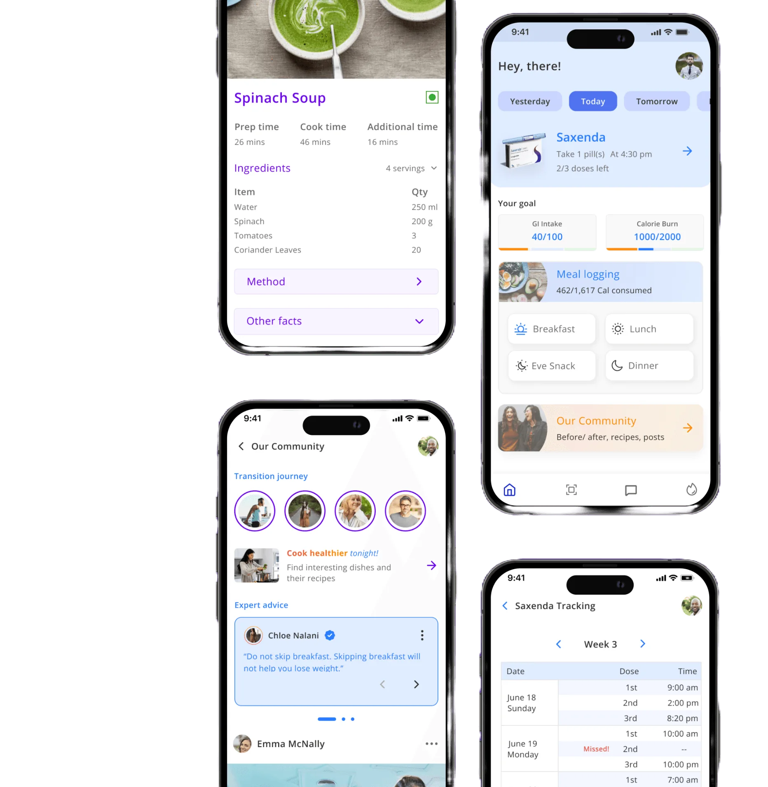
Initial research
There is no lack of wellness and weight loss products on the market. To better understand the landscape, I conducted a competitive analysis to give insight on next steps.
- Lack of intelligent personalization Not taking into account individuals' differences like genetics, metabolism, etc..
- Inaccurate tracking Many apps rely heavily on caloric intake and calorie burn
- Lack of understanding Users have insufficient awareness and education on the needs of a body
- Promoting short term goals A lot of apps focus on losing weight in 2-3 months but fail to make users consider long-term maintenance
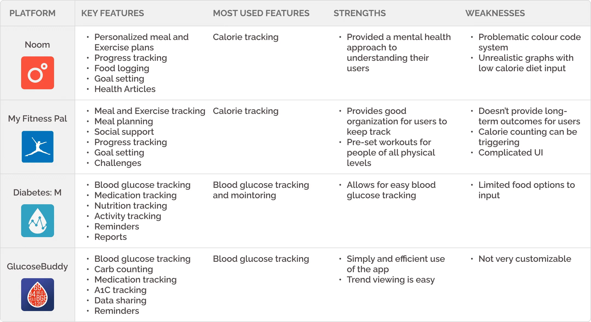
Survey
To better understand users' relationships with existing weight management tools I conducted a survey.
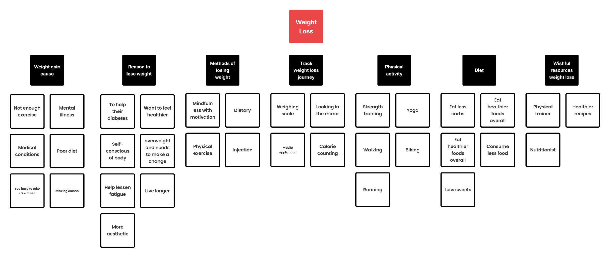
Dr Reddy's needs a way to incentivize usage of their generic drug Saxenda, and to be able to create brand loyalty.
Ideation
To cover this project there was a need to establish a clear information architecture.
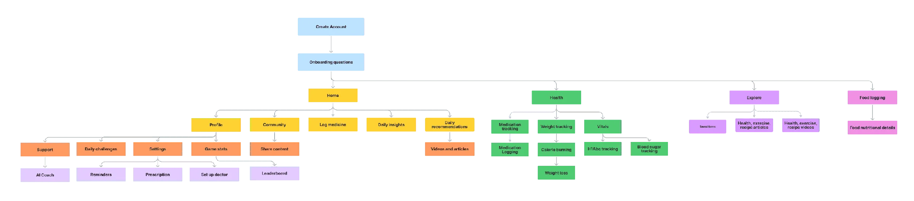
User flows
Getting more specific with the features user flows followed as next steps.
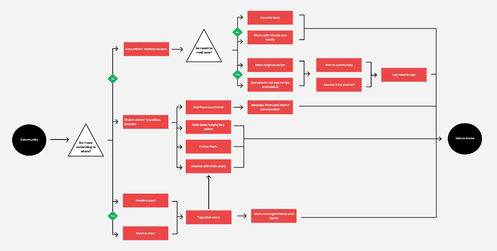
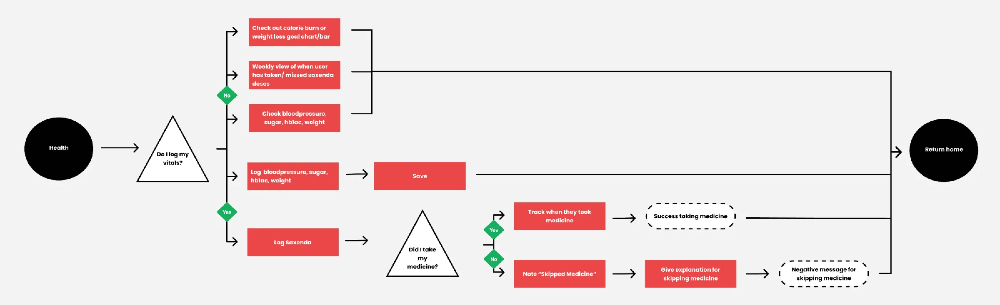
Key features
Open the New York market with a platform retailers would actually want to use.
Community section
To introduce and create a community for those who are currently on their weightloss journey
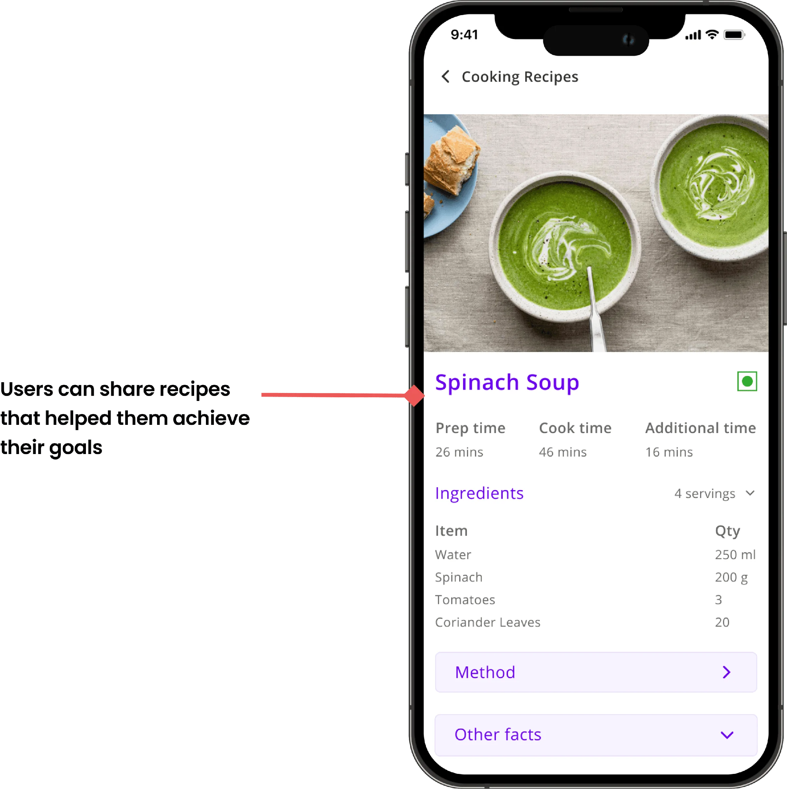
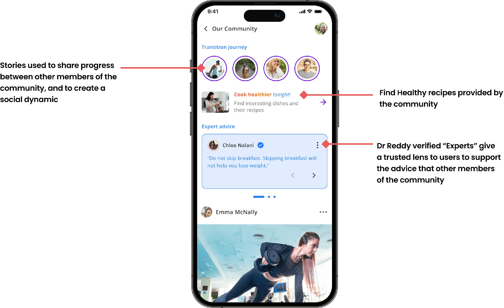
Medication and vitals section
promote and incentivize use of Dr Reddy's generic drug Saxenda through gamification
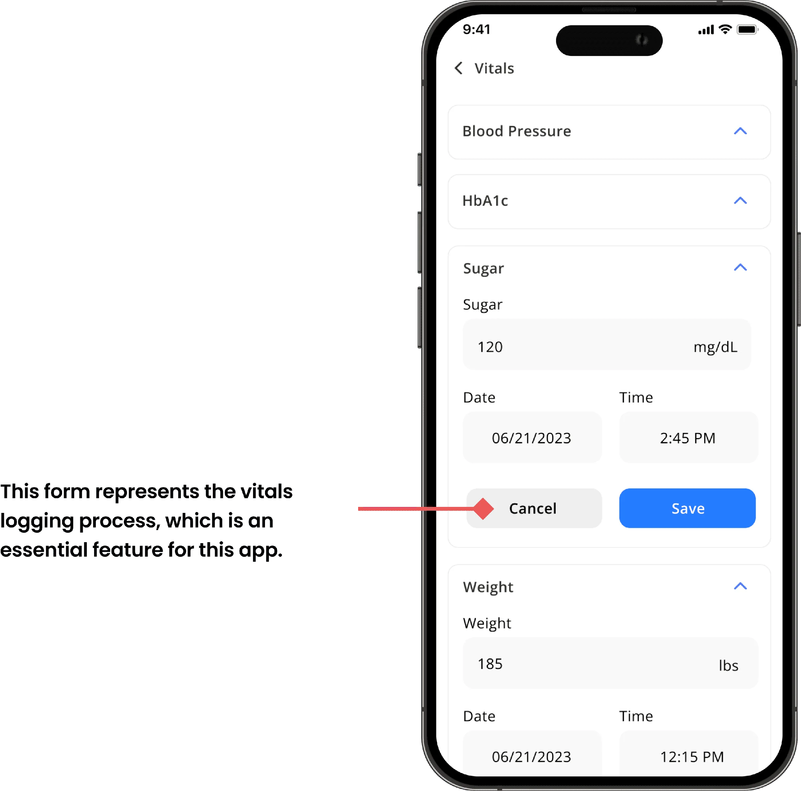
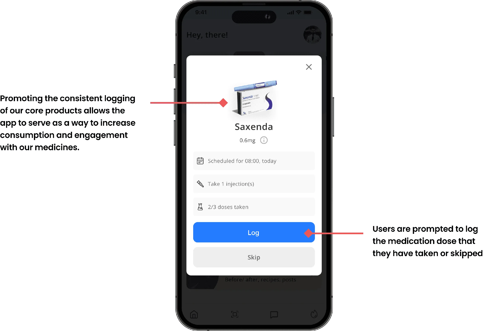
Meal logging
Allows users to track their meals so they can understand which foods positively or negatively affect them.
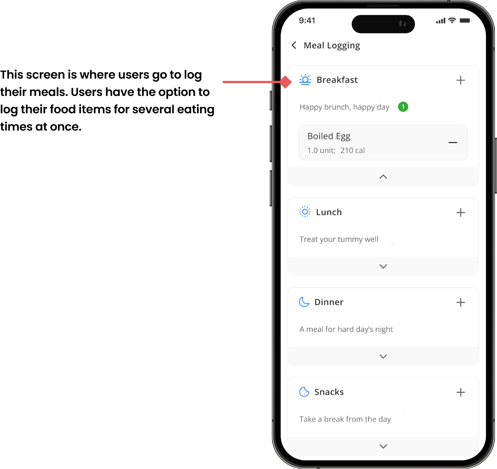
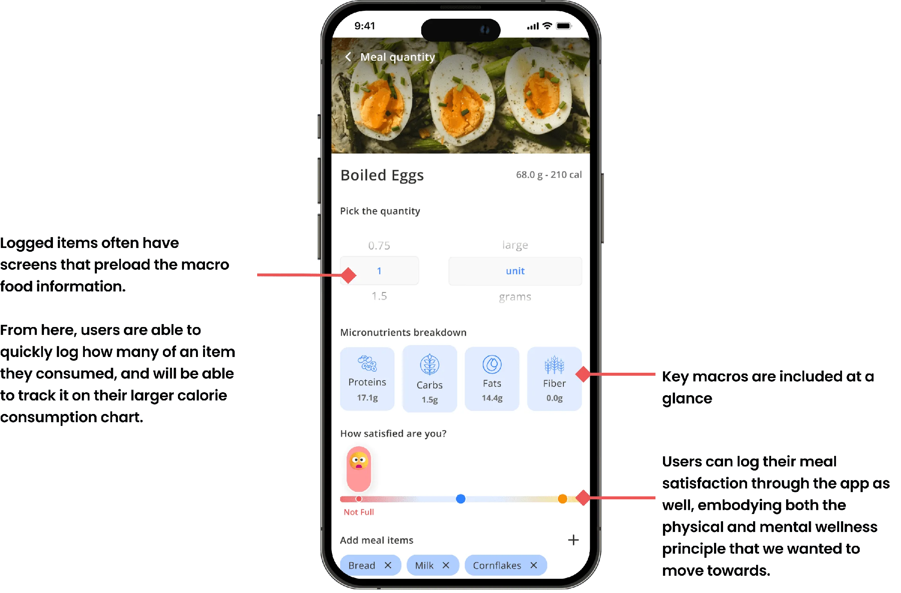
Gamification
To incentivize engagement, I proposed gamifying the app. After doing some research on Yu Kai Chou’s Octalysis framework, building a competitive analysis, and brainstorming with the team we were able to build out a set list of gamification features we believed would be beneficial to our app.
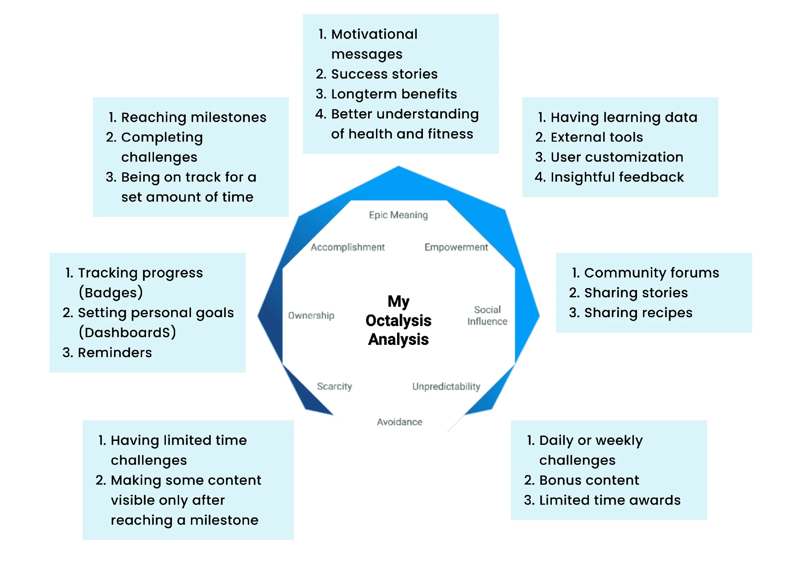
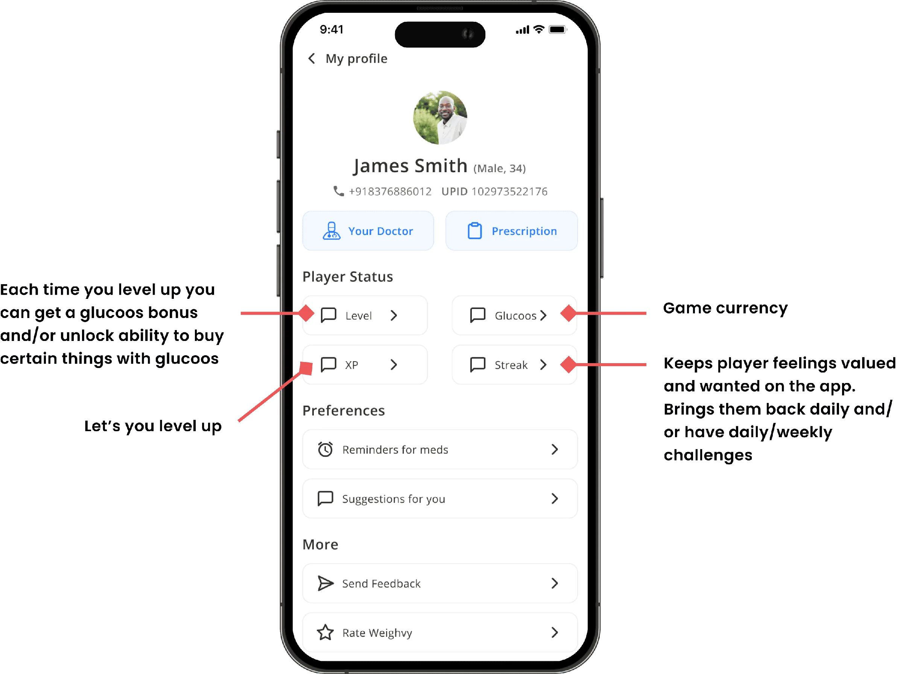